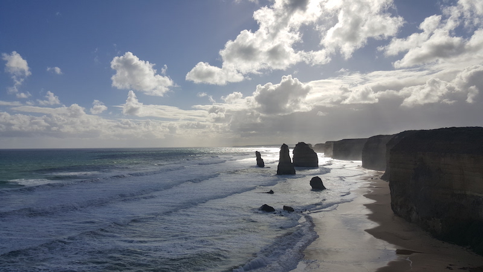

The Twelve Apostles
They are the limestone stacks in the Port Campbell National Park, by the Great Ocean Road in Victoria, Australia

Photo by Yichong Wang
Some Facts of the Apostles...
- They are formed by erosion
- Only ever having nine stacks
- One of the stack collapsed on July 3rd, 2005, left with eight stacks
- Eventually all of the stacks will collapse due to erosion
| Nearby Attractions |
Distance from the Apostles |
| Gibson Steps |
1.1KM |
| London Bridge |
18.2KM |
australia.com has a page on The Twelve Apostles. Their site looks very fancy (made with javascript), but unfortunately it lacks basic facts on the Apostles, which is something this site provides to its users!